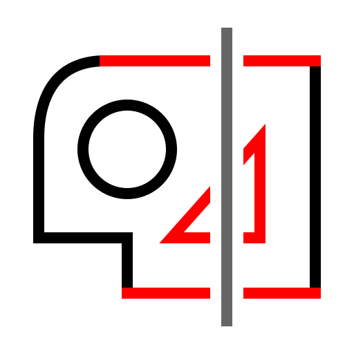
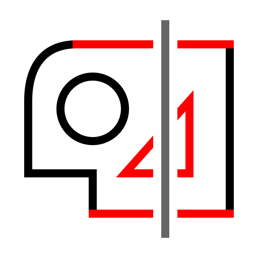
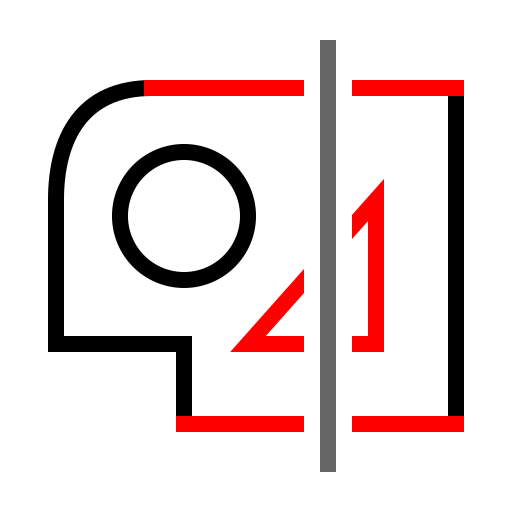
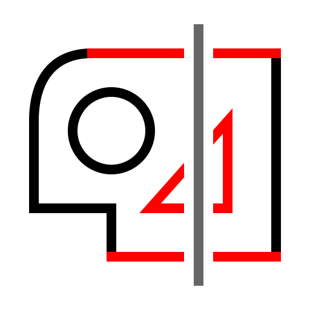
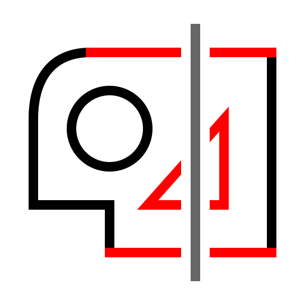

(Od-)izberi eintitete v presesečišču
Toolbar / Icon:

Menu:
Izberi > (Od-)izberi eintitete v presesečišču
Shortcut:
T, X
Commands:
selectintersected | tx | ux
Opis:
Označi ali odznači vse objekte, ki jih seka podana črta.
 


